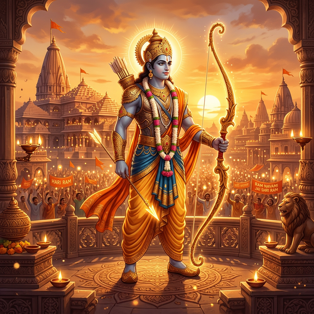
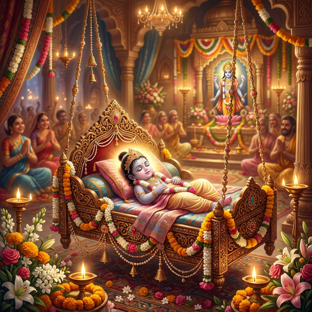

Celebrating the birth of Lord Rama, the seventh avatar of Vishnu, and the victory of Dharma over Adharma.
Explore the Legend
Ram Navami is a spring Hindu festival that celebrates the birthday of the god Rama. He is particularly important to the Vaishnavism tradition of Hinduism. The festival falls on the ninth day of the bright half (Shukla Paksha) in the Hindu calendar month of Chaitra. This typically occurs in the Gregorian months of March or April every year.
It marks the culmination of the Chaitra Navaratri festival. The day is observed by the recitation of Rama Katha, or reading Rama stories including the Hindu epic Ramayana. Some devotees mark the day by taking a miniature statue of the infant Rama and washing it, then clothing it and placing it in a cradle. Charitable events and community meals are also organized.

The life of Lord Rama is a testament to duty, righteousness, and honor. He is known as "Maryada Purushottam," the Supreme Man who follows the boundaries of virtue.
Willingly accepted a 14-year exile to the forest to keep his father's promise, showcasing unparalleled devotion to parental honor.
His reign, known as "Ram Rajya," is the ultimate blueprint for a just, peaceful, and prosperous society where every voice is heard.
Defeated the demon king Ravana to rescue his wife Sita and restore balance to the world, proving that light always triumphs over darkness.
The birthplace of Rama sees millions of devotees. People take a dip in the sacred Sarayu river and visit the grand Ram Janmabhoomi temple.
In many regions, it is celebrated as the wedding anniversary of Rama and Sita, known as 'Sitarama Kalyanam'. Grand processions are held.
Devotees observe fasts for the whole day. Evenings are filled with spiritual songs (bhajans) and the distribution of 'Panakam'.